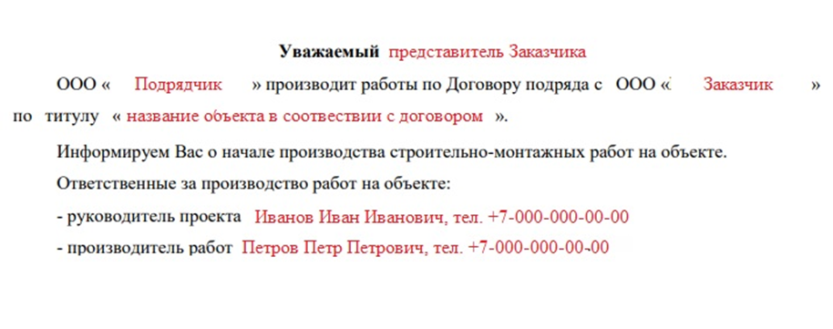

Как взаимодействовать со строительным контролем при начале работ
При начале нового строительства встает вопрос о взаимодействии с представителями СК Заказчика. Обычно этим занимается Главный инженер или строительный контроль Подрядчика, но нередко все функции по общению ложатся на инженеров ПТО.
С чего начать взаимодействие с СК
Шаг 1. Запросите у Заказчика комплект проектной и рабочей документации со штампом «В производство работ».
Если проект ведется «под ключ», т.е. Подрядчик самостоятельно разрабатывает проект, убедитесь, что у Вас на руках есть согласованный проект. Это первое, на что обратит внимание СК.
Шаг 2. Проверьте наличие разрешительно-организационной документации (РОД).
Ее могут потребовать в любой момент: выезде на объект, при приемке скрытых работ, или же при сдаче ИД. Именно комплект документации нужен для допуска на объект и производству работ. РОД может потребоваться на проверку СК Заказчика, при его передаче обязательного подготовьте реестр (один СК Заказчику, другой Подрядчику (себе)) и передавайте его при подписании реестра с указанием даты приемки и подписью ответственного лица СК.
Шаг 3. Проверьте наличие проекта производства работ (ППР), проекта-производства работ кранами (ППРК) – при наличии таких работ, технологические карты на выполняемые виды работ, инструкции (при требовании).
В них должны быть заполнены листы ознакомления, на титульных листах стоять печати согласования Заказчика и Подрядчика.
Шаг 4. Подготовьте журналы (общих работ, входного контроля и специализированные журналы в соответствии с видом работ).
Журналы должны быть прошиты, пронумерованы и скреплены печатью, в них заполнены титульные и первые листы.
Шаг 5. Теперь можете начать искать представителя СК Заказчика.
При первом звонке, электронном письме или очной встрече уточните как вас зовут, организацию, должность и какой объект будете вести. Попросите приказ о его назначении на данный объект (этот приказ впоследствии будет фигурировать в ИД), и обязательно уточните, имеется ли у Заказчика ОРД (его также могут называть «Перечень приемо-сдаточной документации», «Положение о формировании приемо-сдаточной документации», «Локальная нормативная документация») – данный перечень у Заказчиков может очень сильно отличаться, но т.к. в договоре подряда этот момент фигурирует, нужно будет придерживаться именно ему.
В ОРД также может быть перечень разрешительно-организационной документации.
Шаг 6. Направьте СК Заказчика письмо о начале производства работ.
Инженер СК будет знать о выходе подрядчика на объект, это поможет избежать случаев, когда работа выполнена, а СК об этом не знал.

В процессе работ проверяйте актуальность ОРД: действия сертификатов, разрешений и удостоверений.